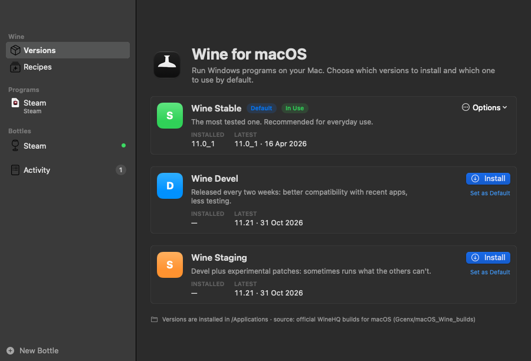
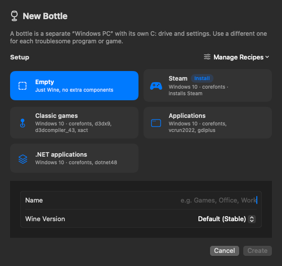
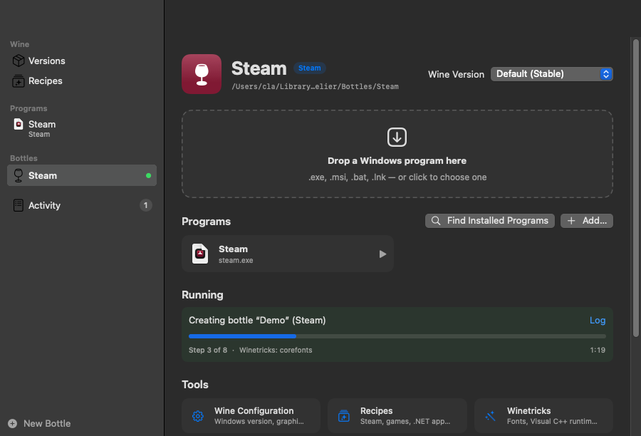
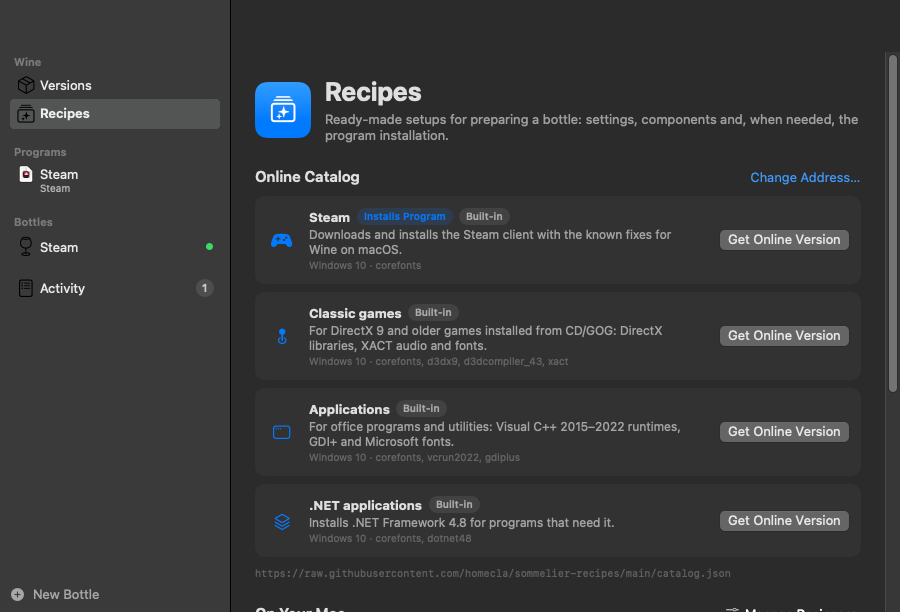
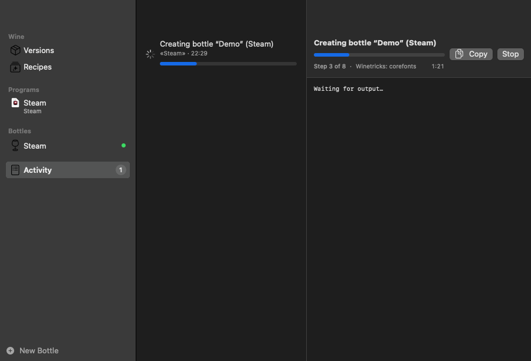

A Wine manager for macOS
Run Windows programs on your Mac
Sommelier installs, updates and runs the official WineHQ builds for macOS. This guide explains how to install it and how to use it, from the app and from the Terminal.
01Key ideas
| Term | Meaning |
|---|---|
| Wine | Software that runs Windows programs on macOS by translating Windows calls into Mac ones. It is not an emulator or a virtual machine. |
| Branch | The Wine version you install: Stable (most tested, recommended), Devel (newer, every two weeks) or Staging (Devel plus experimental patches). You can install several and choose the default one. |
| Bottle | A separate “Windows PC” with its own C: drive, settings and programs. Use a different bottle for each program or game that needs special settings, so they don't interfere with each other. |
| Recipe | A ready-made setup for a bottle: Windows version, components (fonts, Visual C++, .NET, DirectX…) and, when needed, the automatic installation of a program such as Steam. |
02Requirements
- A Mac running macOS 14 Sonoma or later.
- On Macs with Apple Silicon (M1, M2, M3…): Rosetta 2, because Wine builds for macOS are made for Intel. The installer offers to install it if it's missing.
- An internet connection to download Wine, recipes and programs.
- To build the app: Apple's Command Line Tools (
xcode-select --install) or Xcode.
03Installation
Install with one command
Open Terminal and run:
git clone https://github.com/homecla/sommelier.git
cd sommelier
./install.shThe installer:
- installs the
sommeliercommand in~/.local/bin; - installs Rosetta 2 if it is needed and missing;
- builds the Sommelier app and copies it into
/Applications; - installs Wine Stable, or updates the Wine versions you already have.
Useful options:
./install.sh --branch devel # use Devel as the default branch
./install.sh --no-wine # install only the command and the appIf the installer says ~/.local/bin is not in your PATH, run the line it suggests (it adds the folder to ~/.zprofile), then open a new Terminal window.
First launch
Open Sommelier from Launchpad or from the Applications folder. On the first launch the app checks which Wine versions are installed and whether updates are available.
The app speaks English and Italian. By default it follows your Mac's language; to change it, open Sommelier → Settings (⌘,) and choose Language.
04Using the app
The sidebar has five areas: Versions, Recipes, Programs (every program you can launch, in any bottle), your Bottles and Activity.
Wine versions

- Install downloads the version, verifies it (SHA-256) and installs it in
/Applications. - Update to … appears when a newer version is out. Update All updates every branch at once.
- Options → Use as Default, Show in Finder, Reinstall, Uninstall…
- The toolbar button (⌘R) checks for updates again.
Bottles and installed programs are never touched by updates.
Creating a bottle
Click New Bottle at the bottom of the sidebar (⌘N).

- Choose a setup: Empty (just Wine) or one of the recipes (Steam, Classic games, Applications, .NET applications…). Recipes marked Install also download and install a program.
- Type a Name (for example “Games” or “Office”).
- Choose the Wine Version: Default follows the default branch, or pick a specific one.
- Click Create (or Create and Install). A progress bar shows Step 3 of 8, what is happening and how long the current step has been running, both in the bottle and in Activity. The first time, preparing a bottle takes about a minute.
Running Windows programs

Open a bottle from the sidebar. To run a program you can:
- drag a
.exe,.msi,.bator.lnkfile onto the dashed area; - click the dashed area and choose the file;
- in Finder, right-click a
.exefile → Open With → Sommelier, then choose the bottle; - use File → Run a Windows Program… (⌘O).
Installers (setup.exe, .msi) run like any other program: follow their windows as you would on Windows.
The program list
After installing something, click Find Installed Programs: Sommelier looks for Start menu and Desktop shortcuts and for programs in Program Files, and lets you choose which ones to add. You can also add a file by hand with Add….
Click a program to launch it. Right-click it to Rename…, Show in Finder or Remove from List (the program stays installed in the bottle).
Every program in the list also appears in the Programs section of the sidebar, with the bottle it belongs to and a green dot while it is running. Select it to see its page: Launch, Open Bottle, Show in Finder, its path and its launch arguments.
Tools
| Tool | What it's for |
|---|---|
| Wine Configuration | Windows version, graphics, audio, libraries (winecfg) |
| Recipes | Apply a recipe to an existing bottle |
| Winetricks | Install components: fonts, Visual C++, .NET, DirectX… |
| File Explorer | Browse the bottle's drives the Windows way |
| Command Prompt | cmd.exe in a window |
| Registry Editor | regedit |
| Control Panel | Windows settings |
| Add/Remove Programs | Uninstall Windows software |
| Task Manager | See and end Windows processes |
| macOS Terminal | A Terminal ready with wine, winetricks and sommelier for this bottle |
| Delete Bottle | Moves the bottle and everything in it to the Trash |
In the toolbar: Open C: opens the bottle's drive in Finder; Quit All closes every Windows program running in the bottle.
Winetricks
Winetricks installs Windows components that many programs need. Select the common packages (Microsoft fonts, Visual C++ 2015–2022, .NET 4.8, DirectX 9…) or type others, separated by spaces, then click Install. Some packages take several minutes.
Many of these packages are Microsoft software downloaded from Microsoft's servers: by installing them you accept their license terms.
Recipes and the online catalog

- Online Catalog: recipes published at homecla/sommelier-recipes. Click Install to download one (its SHA-256 fingerprint is checked), Update when a newer version is available, or Get Online Version to replace a built-in recipe with the catalog one.
- On Your Mac: built-in, downloaded and personal recipes. The Manage Recipes menu adds recipes from a file or web address, updates downloaded ones, creates a personal recipe from a template, and opens the personal recipes folder.
Safety. Recipes are never executed as scripts: Sommelier reads only known settings. A recipe can still download and run an installer inside the bottle, so only add recipes from sources you trust.
Activity

Every installation, recipe and program you launch appears here with its log; running installations and recipes show their progress bar. Use Copy to copy a log (useful when asking for help), Stop to end a running task and Clear Completed to tidy up the list.
Settings
Sommelier → Settings (⌘,):
- Language: Automatic, English or Italian.
- Check for Wine updates at launch.
- Detailed Wine logs: turn this on when a program won't start, then look at its log in Activity.
05Example: installing Steam
- Click New Bottle, choose the Steam setup, name it “Steam”.
- Click Create and Install and wait: Sommelier sets Windows 10, installs the Microsoft fonts, downloads Valve's official installer and installs Steam.
- When it finishes, Steam appears in the bottle's program list with the right launch options. Click it and sign in.
DirectX 9 games and many indie games run well. With plain Wine on macOS, DirectX 11/12 games often don't: they need translation layers such as D3DMetal or DXVK (included in CrossOver or Apple's Game Porting Toolkit). If Steam's window stays black, close it and launch Steam again from the bottle.
06Using the command line
Everything the app does is also available in Terminal with sommelier (sommelier help shows the full list).
# Wine versions
sommelier status -r # installed versions and updates
sommelier install devel # install a branch
sommelier update # update installed versions
sommelier default staging # change the default branch
sommelier uninstall staging # remove a version
# Bottles
sommelier bottle create Games -P giochi-classici # new bottle with a recipe
sommelier bottle list
sommelier bottle apply Games applicazioni # apply a recipe to a bottle
sommelier bottle delete Games
# Programs
sommelier run -B Games setup.exe # run a file in a bottle
sommelier run -B Games winecfg # run a Wine tool
sommelier start -B Steam Steam # launch a saved program with its options
sommelier winetricks -B Games corefonts vcrun2022
sommelier kill -B Games # close every program in the bottle
# Recipes and catalog
sommelier preset list
sommelier catalog # online catalog
sommelier catalog install steam
sommelier catalog update
# System
sommelier doctor # check Rosetta, permissions, dependenciesThe language follows your Mac; to force it use SOMMELIER_LANG=en or SOMMELIER_LANG=it.
07Keeping everything up to date
| What | How |
|---|---|
| Wine | Versions → Update All in the app, or sommelier update |
| Catalog recipes | Recipes → Update, or sommelier catalog update |
| Sommelier itself | in the project folder: git pull && ./install.sh |
08Troubleshooting
“Rosetta 2 is not installed”: click Install Rosetta in Versions, or run sommelier rosetta.
A program doesn't start: turn on Detailed Wine logs in Settings, launch it again and read its log in Activity. Often a missing component is the cause: try Winetricks (for example vcrun2022, corefonts, dotnet48) or a recipe.
A game shows a black screen or crashes: DirectX 11/12 games are usually not supported by plain Wine on macOS (see the note in the Steam example). Older games may work better with Windows 7 or XP set in Wine Configuration.
“Wine … is in use” while updating: close the Windows programs (or click Quit All in the bottle, or run sommelier kill) and try again.
Winetricks fails: many packages need cabextract; install it with brew install cabextract.
Updates can't be checked: Sommelier needs to reach GitHub. Check your connection and click Try Again. Installed versions keep working offline.
Something else: run sommelier doctor. It checks Rosetta, permissions, dependencies and the connection.
09Uninstalling
- Quit Sommelier (⌘Q) and any Windows program that is running.
- Remove Wine versions from Versions (or
sommelier uninstall <branch>). - Drag Sommelier from Applications to the Trash.
- Remove the command and recipes:
rm ~/.local/bin/sommelier && rm -r ~/.local/share/sommelier - To also delete all bottles and their programs, move
~/Library/Application Support/Sommelierto the Trash. This cannot be undone once the Trash is emptied. - Remove the settings files:
rm ~/Library/Preferences/io.github.homecla.sommelier.plist ~/Library/Preferences/org.winehq.wine.plist(defaults deleteis not enough: it empties the files but leaves them in place).
10Where files are stored
| What | Where |
|---|---|
| Wine | /Applications/Wine Stable.app, Wine Devel.app, Wine Staging.app |
| The app | /Applications/Sommelier.app |
| The command | ~/.local/bin/sommelier |
| Bottles, data | ~/Library/Application Support/Sommelier/ (bottles, personal recipes, winetricks, cache) |
| Built-in recipes | ~/.local/share/sommelier/presets/ |
| App settings | ~/Library/Preferences/io.github.homecla.sommelier.plist |